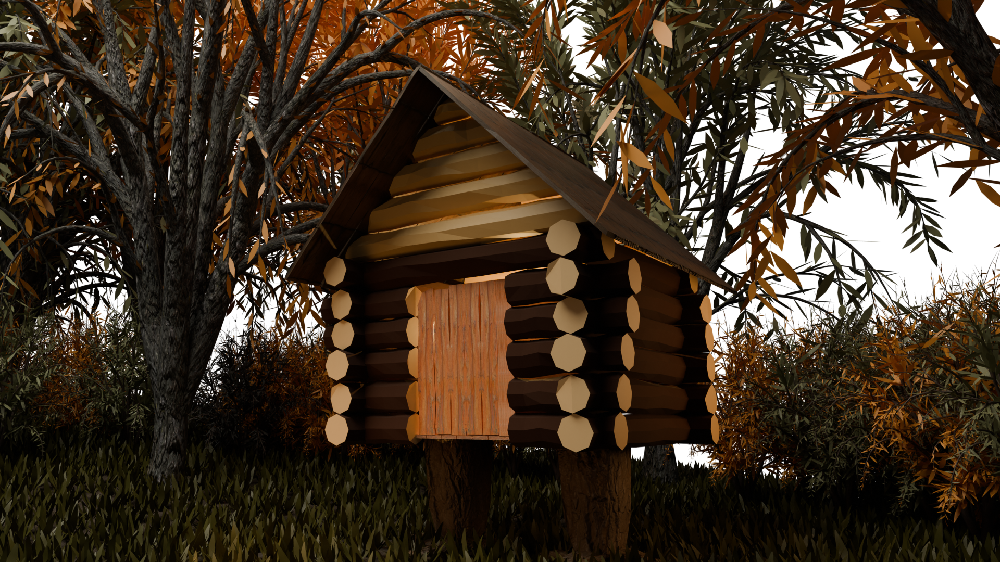
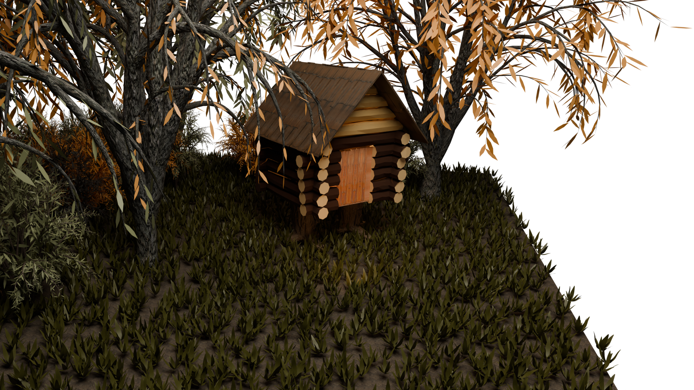
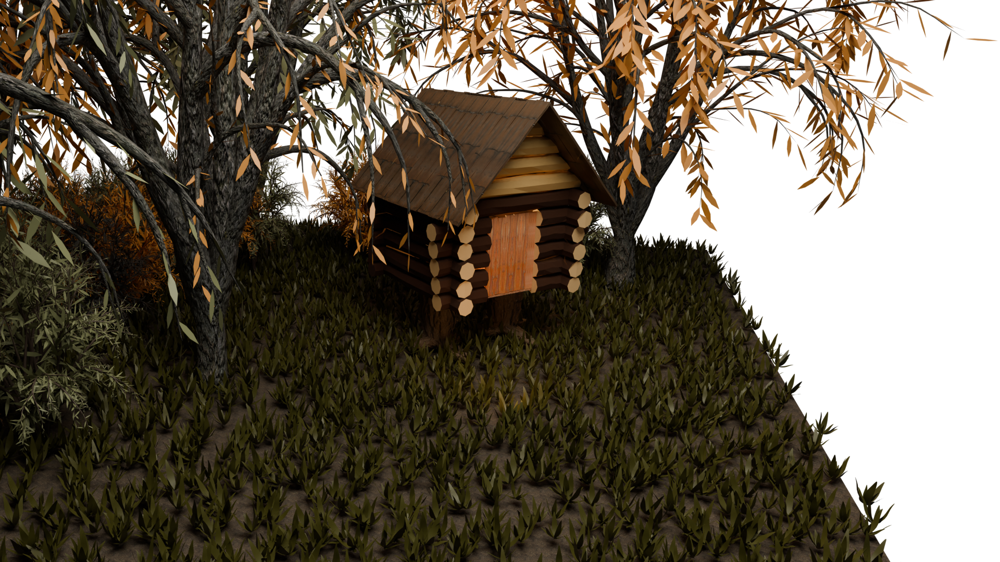

/3D МОДЕЛЬ ИЗБУШКИ НА КУРЬИХ НОЖКАХ

данная 3D локация создавалась в программе Blender в качестве дополнительного задания в университете. При создании использовались реалистичные текстуры досок, деревьев, травы. Была проведена работа с освещением. Проект можно использовать в качестве локации для мобильных и компьютерных игр, а также 3D анимаций.
 
